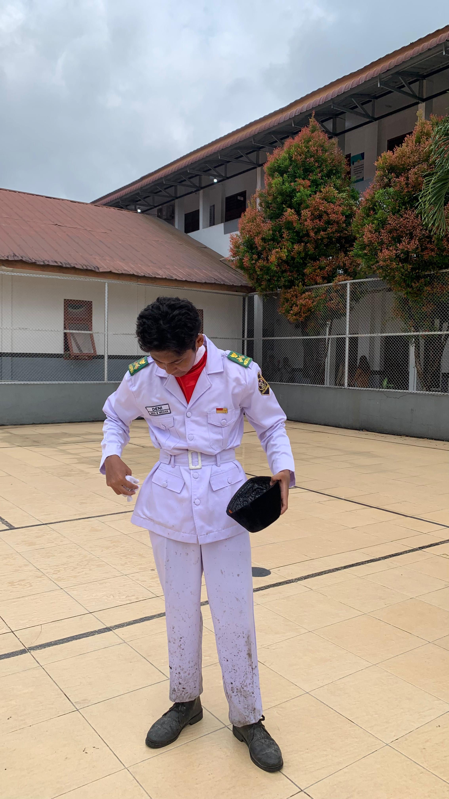
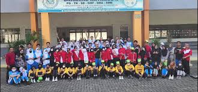
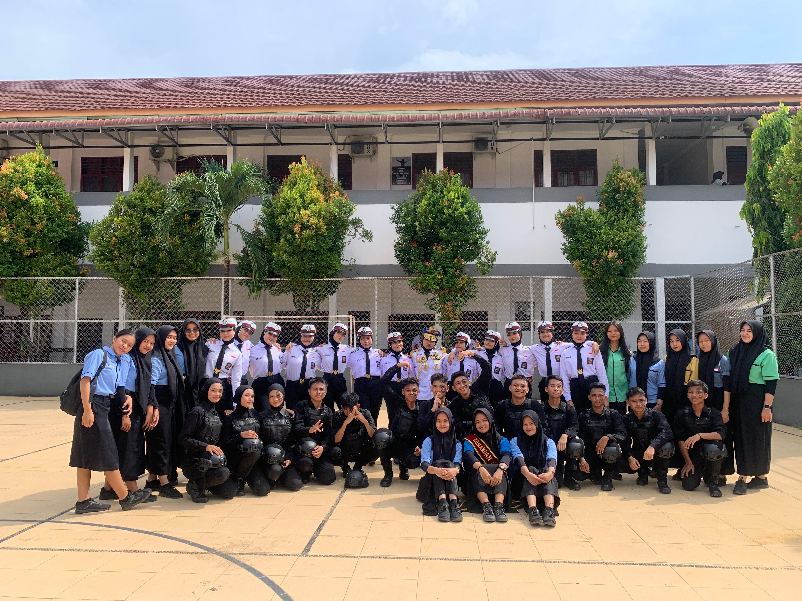

Personal

Rifan Al Fahri adalah seorang individu yang lahir dan besar di kota bersejarah, Kota Medan. Sebagai anak pertama dari du bersaudara. Rifan tumbuh dalam lingkungan keluarga yang kurang baik, bisa di bilang broken home. Rifan ini juga bisa disebut anak yang balance karena, dalam segi sifat kadang baik kadang nakal dan juga dalam segi pendidikan tidak pintar sekali dan tidak bodoh sekali.
Pendidikan
Saya memulai pendidikan pertama di Paud tahun 2011, lalu mulai masuk TK pada tahun 2013.
Setelah mendapat ilmu di TK saya mulai
Masuk Sekolah Dasar (SD) Pada kelas 1 SD saya bersekolah di Panca Budi Kota Medan, setahun saya bersekolah di Panca Budi.
lalu saya pindah ke Riau pada tahun 2015 melanjutkan sekolah saya di sana dari kelas 2 sampai kelas 3 SD, Setelah itu saya pindah lagi.
ke Kota Medan saya melanjutkan pendidikan dari kelas 4 SD lalu lulus SD di kelas 6 pada tahun 2020 di SD BRIGJEND KATAMSO 1 MEDAN.
Lalu saya masuk SMP lulus pada tahun 2023 di SMP BRIGJEND KATAMSO 1 MEDAN. Setelah itu saya masuk SMK di SMKN 9 MEDAN dengan memilih jurusan RPL dan saya sekarang berada di kelas XI di tahun 2024.
Pengalaman
Berikut beberapa pengalaman saya selama saya bersekolah.
SD BRIGJEND KATAMSO 1 MEDAN

Saya mengikuti ekstrakurikuler Drum Band sewaktu saya menempuh pendidikan SD di BRIGJEND KATAMSO 1 MEDAN dan pada saat itu saya dan rekan-rekan Drum Band saya tampil di layar TV yang bernama channel tv TVRI.
PASKIBRA SMK NEGERI 9 MEDAN

Lalu setelah saya masuk SMK saya mengikuti kegiatan ekstrakurikuler paskibra di SMK dan sudah mengikuti beberapa event lomba dan juga sudah mengikuti pengibaran peringatan hari nasional di sekolah. Dan di paskibra juga saya menjadikannya keluarga ke-2 karena di paskibra di ajarkan tentang kekeluargaan yang erat.
Kontak
Jika ingin lebih tau banyak saya kunjungi kontak berikut.